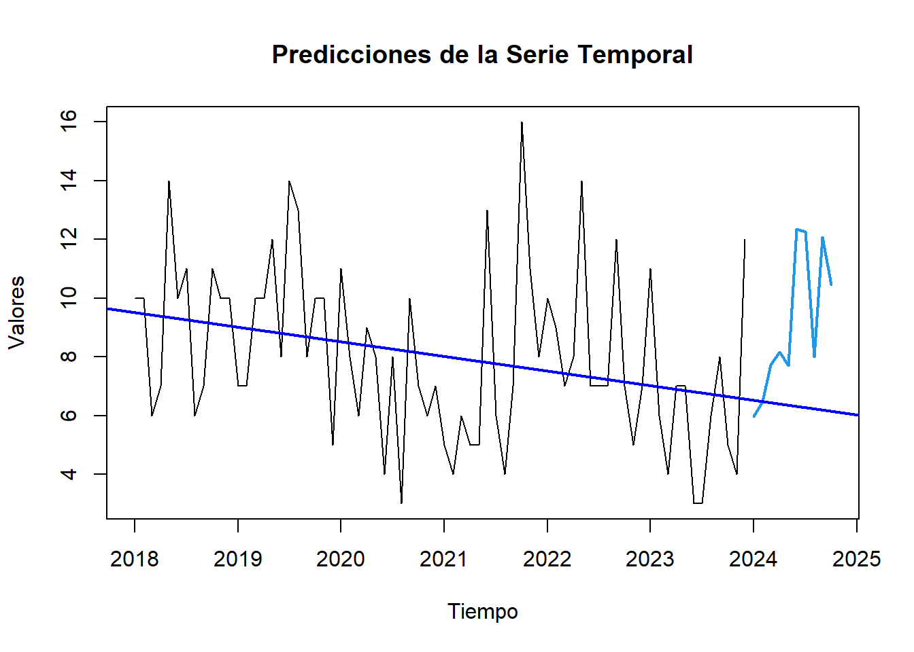

Chapter 11 ModeloRedesNeuronales
Modelo Redes Neuronales
Las redes neuronales son un modelo de aprendizaje automático inspirado en el funcionamiento del cerebro humano. Están compuestas por capas de neuronas artificiales que se conectan entre sí y pueden aprender patrones complejos a partir de datos. En el contexto de las series temporales, las redes neuronales pueden ser utilizadas para predecir valores futuros basándose en patrones históricos.
En este documento, realizaremos un análisis de nuestra serie temporal utilizando un modelo de redes neuronales. Primero, prepararemos los datos y luego entrenaremos el modelo. Finalmente, mostraremos algunas predicciones del modelo entrenado.
#Cargar los datos y prepararlos
library(dplyr)
DatosNacidos <- read.csv(file = "data/Nacidos_Vivos_en_Hospital_Manuel_Uribe_Angel_20240418.csv")
DatosNacidos$FECHA <- substr(DatosNacidos$FECHA,1,10)
DatosNacidos$FECHA <- as.Date(DatosNacidos$FECHA, format = "%m/%d/%Y")
agrupnacidos <- DatosNacidos %>%
group_by(FECHA, MULTIPLICIDAD.EMBARAZO) %>%
summarize(NumeroPartos = n(), .groups = 'drop')
agrupnacidos$NumeroNacidos <-
ifelse(agrupnacidos$MULTIPLICIDAD.EMBARAZO == "DOBLE",agrupnacidos$NumeroPartos*2,agrupnacidos$NumeroPartos)
agrupnacidos_2 <- agrupnacidos %>%
group_by(FECHA) %>%
summarize(NumeroNacidos=sum(NumeroNacidos), .groups = 'drop')
dfdesc <- agrupnacidos_2Visualizamos los datos
# Crear la serie de tiempo usando la función 'ts'
dfts2 <- ts(dfdesc$NumeroNacidos, start = c(2018, 01), end = c(2023, 12), frequency = 12)
plot(dfts2, main = "Serie Temporal", ylab = "Valores", xlab = "Tiempo")
# Cálculo del promedio de la serie
avg_value <- mean(dfts2)
# Añadir una línea de promedio
abline(h = avg_value, col = "red", lwd = 2, lty = 2) # Línea de promedio en rojo y discontinua11.1 Modelo de Redes Neuronales
En esta sección, entrenaremos un modelo de redes neuronales para predecir la serie temporal.
11.2 Resultados
A continuación, mostramos algunas predicciones realizadas por el modelo de redes neuronales.
# Visualización de los resultados
plot(forecasts, main = "Predicciones de la Serie Temporal", ylab = "Valores", xlab = "Tiempo")
# Ajuste de una regresión lineal a los datos reales
time_real <- time(dfts2)
fit <- lm(as.numeric(dfts2) ~ time_real)
# Añadir la línea de tendencia a la gráfica
abline(fit, col = "blue", lwd = 2)
## Jan Feb Mar Apr May Jun Jul
## 2024 7.233652 4.896621 8.136797 12.244501 7.187805 5.246503 8.650825
## Aug Sep Oct
## 2024 12.489257 7.151654 5.152388De este modo se puede evidenciar que, a través de la aplicación de redes neuronales se refleja una caida en la tendencia de nacimientos para los periodos pendientes a desarrollarse entre las fechas 2024 y 2025; por lo que es posible inferir que la tasa de natalidad es proporcionalmente decreciente respecto a la evolucion de los periodos futuros.